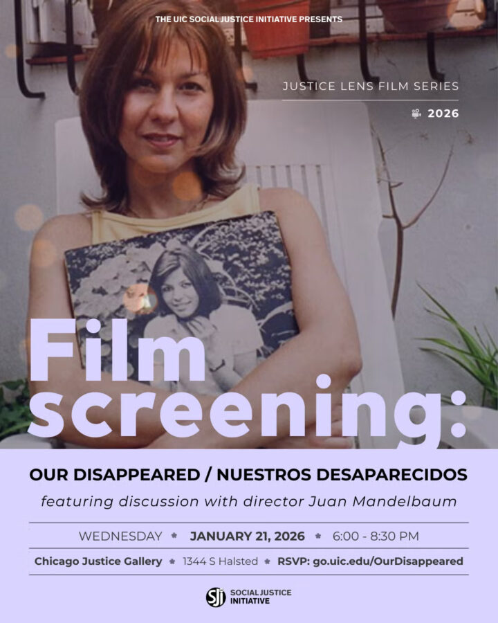

Film Screening: Our Disappeared / Nuestros Desaparecidos plus Q&A with director Juan Mandelbaum & Alejandra Dixon
Join the Social Justice Initiative and New Day Films for a film screening of Our Disappeared/Nuestros desaparecidos followed by discussion with director Juan Mandelbaum and Alejandra Dixon, sister of disappeared Argentinian activist Patricia Dixon, who will join us virtually.
In the film, Mandelbaum finds out that Patricia, a long-lost girlfriend from Argentina, is among the thousands who were kidnapped, tortured, and then “disappeared” by the military during the 1976-1983 dictatorship. Mandelbaum embarks on a journey to find out what happened to Patricia and others he knew who disappeared, and along the way, re-examines his own choices. Using rare archival footage, he evokes the dreams for a revolution that would transform Argentina. As he shares dramatic stories told by parents, siblings, friends, and children of the disappeared, Mandelbaum grieves the tragic losses and shows that when brutal regimes attack the fabric of a country with great impunity, the suffering lasts for generations. And yet now that the children of the disappeared are themselves becoming parents, it becomes clear that in the end, life wins.
This event is free and open to the public. Visit go.uic.edu/OurDisappeared to register for this event.
OUR SPEAKERS:
Juan Mandelbaum, is the director of Our Disappeared/Nuestros Desaparecidos, which has played in over thirty festivals worldwide and aired on the PBS series Independent Lens and Global Voices. Mandelbaum was a producer/director at WGBH on the PBS series Americas, where he co-produced and co-directed In Women’s Hands, on Chilean women’s participation in political life between 1970 and 1990, and produced and directed Builders of Images, on the role of the artist in Latin American societies.
He has made several films on the arts, including the three-part Poetry Heaven, on the Geraldine R. Dodge Foundation’s Poetry Festival and Ringl and Pit, on two German women photographers who started a studio in Berlin in 1929. More recently he was Consulting Producer on Chavela, a film by Catherine Gund and Daresha Kyi on the legendary singer Chavela Vargas. Chavela premiered at the 2017 Berlin International Film Festival and won the second Audience Award.
Mandelbaum has produced and directed several music films (all aired on PBS), including Caetano in Bahia, on the great Brazilian singer/songwriter Caetano Veloso, and A New World of Music, on the New England Conservatory of Music’s Youth Philharmonic Orchestra on tour in Chile and Argentina. His last film is Paquito D’Rivera: From Carne y Frijol to Carnegie Hall, on the great Cuban jazz clarinet and saxophone master. It will air on OBS in 2026.
Mandelbaum is a proud member of New Day Films, the 50+ year old distribution cooperative.